-
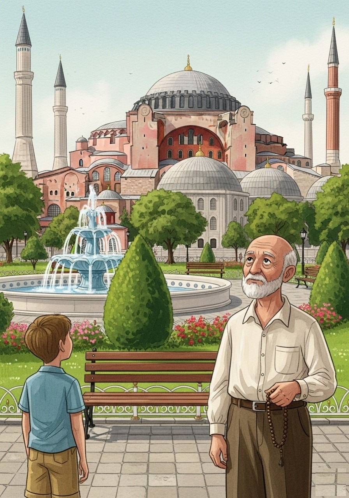
The Story of Hagia Sophia
by Panagiotis Domvros
-
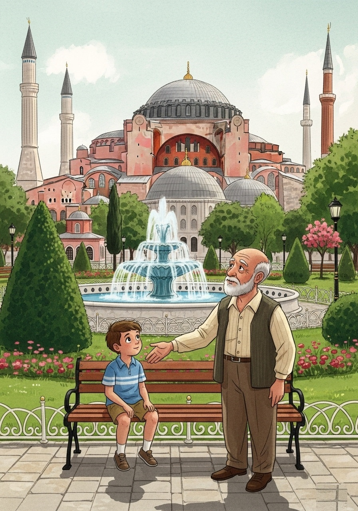
Marios and his grandfather, Alexios, sat on a bench in a beautiful garden. In front of them stood a magnificent building with a giant dome and tall, slender towers. "Grandpa," Marios asked, "what is that amazing place?" Alexios smiled. "That, my dear Marios, is Hagia Sophia, and it has a story as grand as it looks."
-
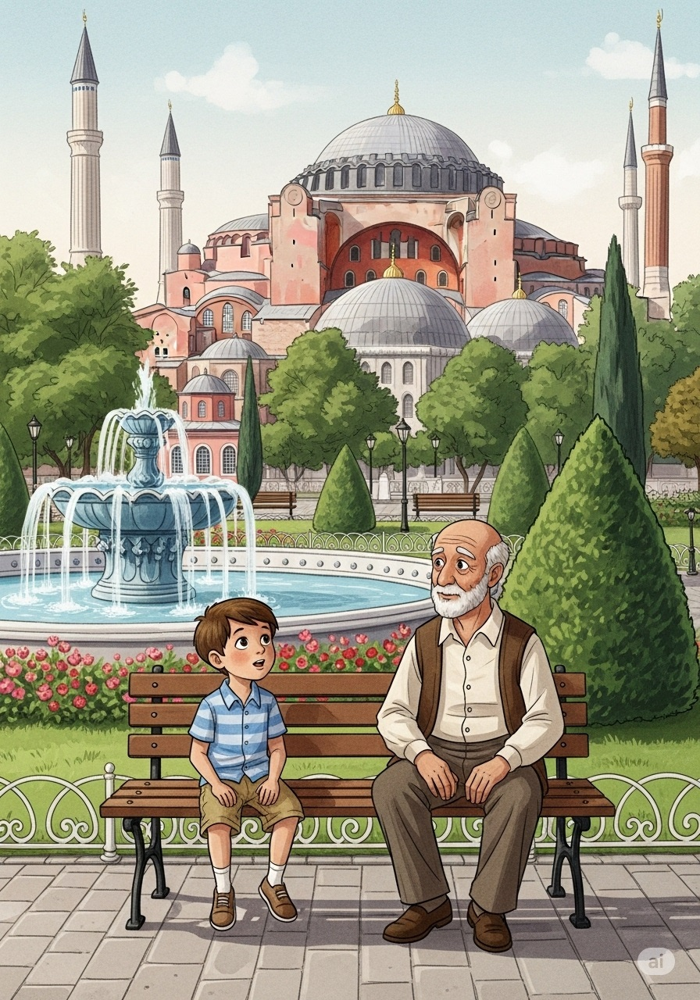
"A very, very long time ago," Alexios began, "a great emperor named Constantine wanted to build the biggest and most beautiful church in the world right here. He called it the 'Great Church'. Imagine a building filled with light and song!"
-
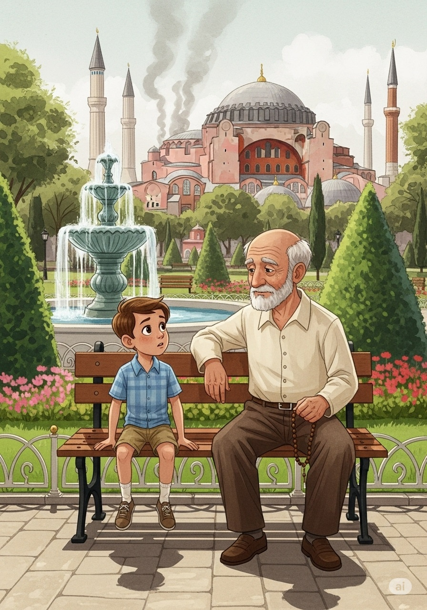
"But the city was a place of strong feelings," Alexios continued, his voice softer. "Twice, during big, angry riots, the beautiful church was burned to the ground. All that was left was smoke and memories."
-
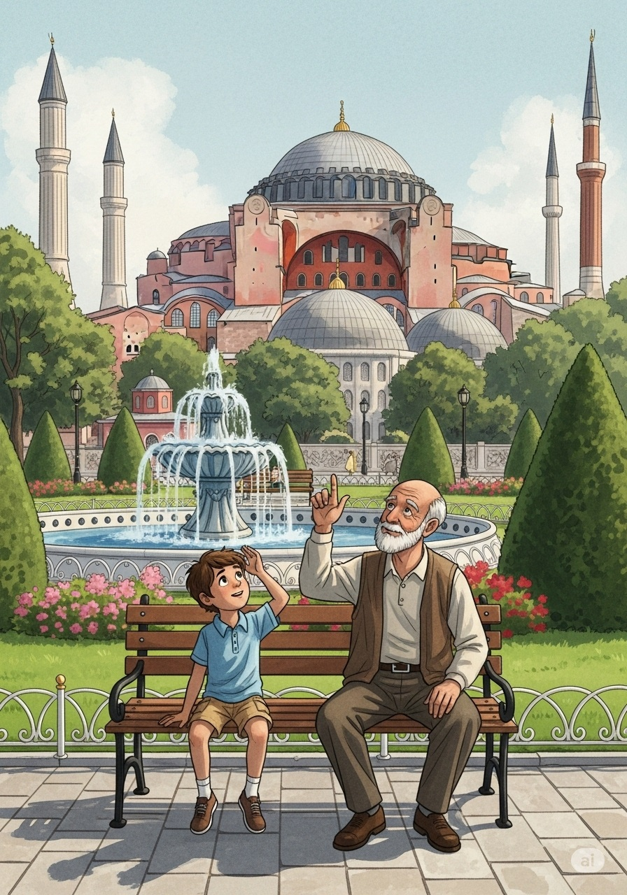
"But a new emperor, Justinian, refused to let the story end there. He hired two brilliant men and told them, 'Build me a church that will be remembered forever!' They designed a dome so huge it seemed to float in the air."
-
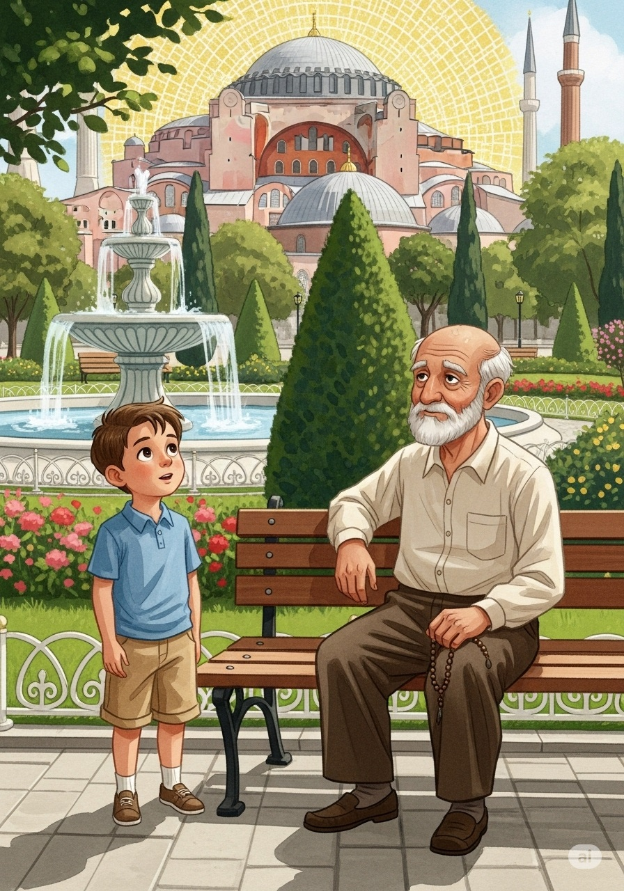
"And they did! For almost a thousand years, Hagia Sophia was the largest cathedral in the world. Its walls were covered in sparkling gold mosaics, telling stories without words. It was a place of wonder and worship."
-
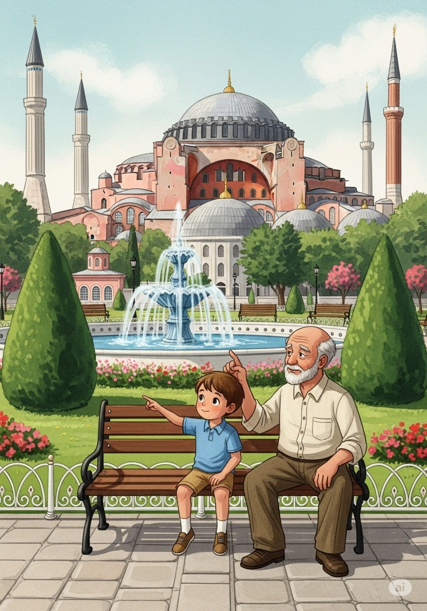
"Then, the city changed hands. A new ruler, Sultan Mehmed II, arrived. He was so impressed by the building's beauty that he decided it should become a mosque. He added the tall towers you see, called minarets, from which the call to prayer would ring out."
-
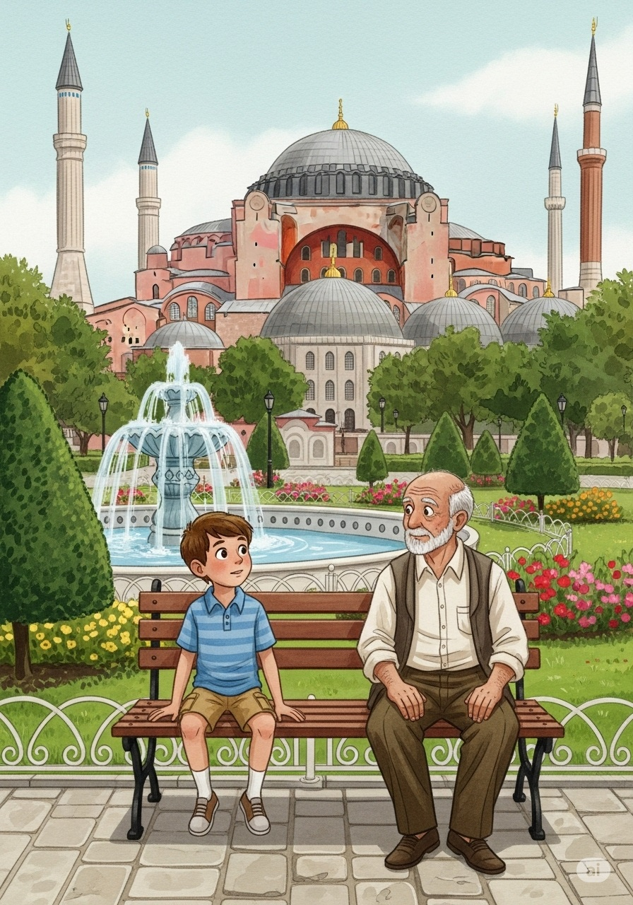
"The new owners didn't respect the building's soul. They covered some of the Christian mosaics and added flowing Arabic calligraphy, praising their God, Allah."
-
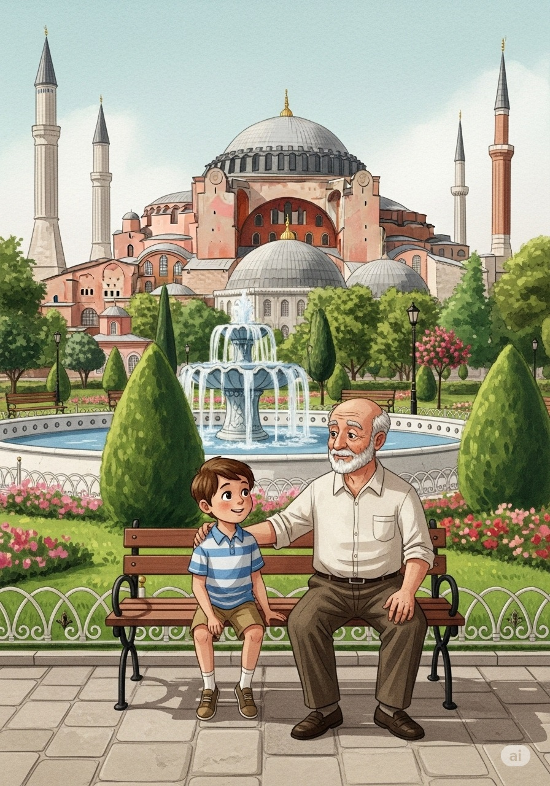
"Centuries passed, and the world changed again. The leaders of the new country of Turkey decided to make Hagia Sophia a museum. They uncovered the old mosaics, so the Christian and Islamic art could be seen side-by-side, telling the building's whole story."
-
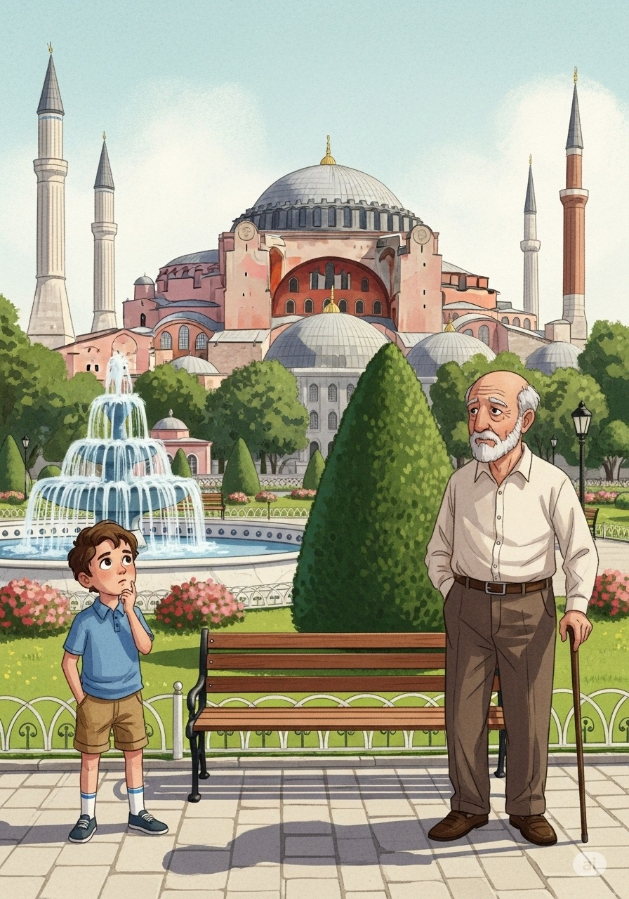
"And just recently, it changed once more. It became a mosque again, a place of active worship. This decision made people all over the world talk about its long and complicated history."
-
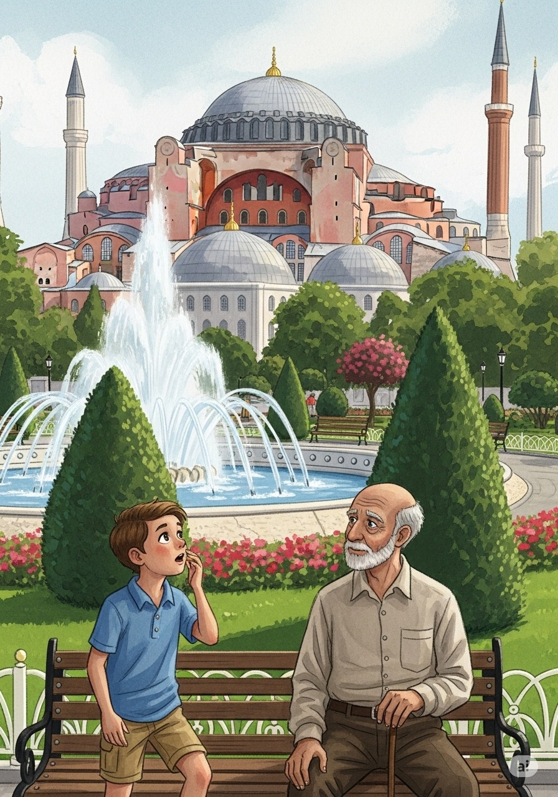
"So you see," Alexios finished, "Hagia Sophia is more than just a building. It holds the stories of emperors and sultans, of different faiths and different times, all under one magnificent dome." Marios looked at the building with new eyes, understanding that it held the history of a whole city within its walls."
Multiple Choice
1. Who first wanted to build the "Great Church" on the site of Hagia Sophia?
2. Who rebuilt Hagia Sophia with its massive, "floating" dome after it was destroyed?
3. What did Sultan Mehmed II do after conquering the city?
4. What are the tall, slender towers added to the building called?
5. In the 20th century, the leaders of the new country of Turkey turned Hagia Sophia into a...
True or False
1. The original church was destroyed by an earthquake.
2. For nearly 1,000 years, Hagia Sophia was the world's largest cathedral.
3. When it was converted to a mosque, all Christian mosaics were destroyed.
4. The story is being told by a grandfather named Alexios to his grandson Marios.
5. The most recent change to the building was turning it back into a museum.
Further Reading
Long before Justinian’s masterpiece rose above the skyline, Emperor Constantine the Great set the stage for Hagia Sophia’s story. In 330 CE, Constantine chose the ancient city of Byzantium as the new capital of the Roman Empire and renamed it Constantinople. To honor Christian faith and imperial power, he commissioned a grand church dedicated to “Holy Wisdom” (Hagia Sophia), laying its foundations soon after. Although that original basilica wasn’t completed until 360 CE—under his nephew, Constantius II—Constantine’s vision established the site’s sacred importance.
Over the next two centuries, two more churches rose and fell on the same spot: one rebuilt by Emperor Theodosius II around 415 CE after riots and another erected in 532 CE that was almost immediately destroyed during the Nika Revolt. Each reconstruction reused columns and marble from pagan temples across the empire, embedding layers of history into every stone.
When Emperor Justinian I came to power, he resolved to create a church worthy of Constantinople’s glory. Between 532 and 537 CE, architects Anthemius of Tralles and Isidore of Miletus assembled tens of thousands of workers to erect the soaring dome—31 meters across—supported by four revolutionary pendentives. The completed Hagia Sophia combined Constantine’s foundational ambition with centuries of rebuilds, resulting in the vast, light-filled basilica that has stood as an architectural marvel for nearly fifteen hundred years.